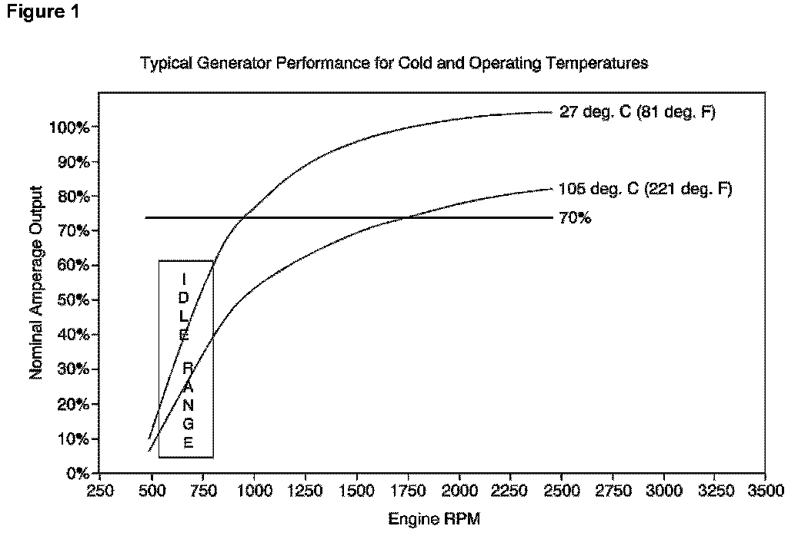
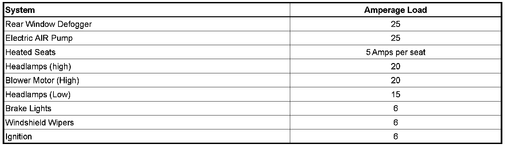

Charging System - Low Voltage Display/Battery Discharged
INFORMATIONBulletin No.: 02-06-03-008D
Date: July 21, 2008
Subject:
Low Voltage Display on IP Gauge, Lights Dim at Stop Lights, Battery Discharged, No Start, Slow Cranking, Dim Lights at Idle, Low Generator Output
Models:
1990-2009 GM Passenger Cars and Light Duty Trucks (including Saturn)
2003-2009 HUMMER H2, H3
2005-2009 Saab 9-7X
Supercede:
This bulletin is being revised to add the 2009 model year. Please discard Corporate Bulletin Number 02-06-03-008C (Section 06 - Engine).
Any vehicle may have a low voltage display (if equipped with gauges), lights that dim at stop lights, slow cranking, no start, low generator output at idle or dim lights at idle when electrical loads are heavy at idle or under slow driving or infrequent usage conditions. These characteristics may be more noticeable with customer added electrical accessories, or with a discharged battery. These are normal operating characteristics of a vehicle electrical system and no repairs should be attempted unless a proven fault has been diagnosed.
During normal driving conditions, when engine speed is above 1000 RPM, the generator is designed to do two things:
^ Supply the current necessary to operate the vehicle's originally equipped electrical devices (loads).
^ Recharge/maintain the battery's state of charge.
The following factors may affect generator and battery performance:
^ Non-usage of the vehicle for extended periods of time. The vehicle's computers, clocks and the like will cause the battery state of charge to drop (For example; 30 days in a parking lot and the vehicle may not start because of a dead battery or a vehicle which is driven only a short distance once a week may end up with a discharged battery to the point where the vehicle may not start). This would be considered abnormal usage of the vehicle and the normally expected result for the vehicle battery, generator and electrical systems.

^ At idle, vehicle electrical loads may exceed the low speed current (amperage) output of the generator and when this happens the shortfall comes from the battery. This will result in a drop in the electrical system voltage as the battery delivers the additional electrical current to meet the demand. This is equivalent to the brown outs experienced by homes and businesses when the electrical demand is more than the supply. See Figure 1.
^ Extended periods of engine idling, with high electrical loads, may result in a discharged battery. Attempting to recharge a battery by letting the engine run at idle may not be beneficial unless all electrical loads are turned "OFF".
^ Increased internal generator temperatures from extended idling can also contribute to lower electrical system voltage. As the generator's internal temperature rises, the generator's output capability is reduced due to increased electrical resistance.

Some typical examples of electrical loads are shown above.
Depending on the vehicle application, generator current (amperage) output at engine idle speeds of 600-700 RPM can be as low as 35 percent of the full rated output. With enough electrical loads "ON", it is easy to exceed the generator current (amperage) output when the engine is at an idle of 600-700 RPM. This is a normal condition. The battery supplements for short periods of time. Items that affect the vehicle's electrical system current and voltage at idle are the number of electrical loads being used, including add-on accessories, and extended idle times. When the vehicle speed is above approximately 24 km/h (15 mph), the engine/generator RPM is high enough and the generator current (amperage) output is sufficient to supply the current (amperage) requirements of the vehicle as originally equipped and recharge the battery.
Dimming lights at idle may be considered normal for two reasons:
1. As the engine/generator speed changes, so will the current (amperage) output of the generator. As a vehicle slows, engine/generator RPM slows and the current (amperage) output of the generator may not be sufficient to supply the loads, the vehicle system voltage will drop and the lights will dim. Dimming of the lights is an indication that current is being pulled from the battery. If the battery is in a low state-of-charge (discharged condition), the driver will notice a more pronounced dimming than a vehicle with a fully charged battery.
2. When high current loads (blower, rear defogger, headlamps, cooling fan, heated seats, power seats, electric "AIR" pump, or power windows) are operating or cycled "ON", the generator's voltage regulator can delay the rise in output. This effect, usually at lower engine speeds, can take up to ten seconds to ramp up the generator output. This is done to avoid loading the engine severely. To increase current (amperage) output, additional torque is consumed by the generator. The engine computer (ECM/PCM) will ramp up engine/generator speed in small steps so engine speed variations are not noticeable to the driver.
For diagnosis of the battery and/or the generator, refer to the appropriate Service Information (SI) or Corporate Bulletin Number 05-06-03-002C.

Disclaimer